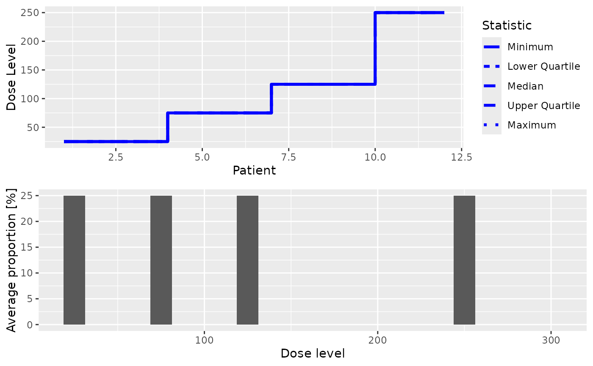

![[Stable]](figures/lifecycle-stable.svg)
Summarize the simulations with plots.
This plot method can be applied to GeneralSimulations objects in order
to summarize them graphically. Possible types of plots at the moment are:
- trajectory
Summary of the trajectory of the simulated trials
- dosesTried
Average proportions of the doses tested in patients
You can specify one or both of these in the type argument.
Examples
# nolint start
## obtain the plot for the simulation results
## If only DLE responses are considered in the simulations
## Specified your simulations when no DLE samples are used
## Define your data set first using an empty data set
## with dose levels from 25 to 300 with increments 25
data <- Data(doseGrid = seq(25, 300, 25))
## Specified the model of 'ModelTox' class eg 'LogisticIndepBeta' class model
model <- LogisticIndepBeta(
binDLE = c(1.05, 1.8),
DLEweights = c(3, 3),
DLEdose = c(25, 300),
data = data
)
## Then the escalation rule
tdNextBest <- NextBestTD(
prob_target_drt = 0.35,
prob_target_eot = 0.3
)
## The cohort size, size of 3 subjects
mySize <- CohortSizeConst(size = 3)
## Deifne the increments for the dose-escalation process
## The maximum increase of 200% for doses up to the maximum of the dose specified in the doseGrid
## The maximum increase of 200% for dose above the maximum of the dose specified in the doseGrid
## This is to specified a maximum of 3-fold restriction in dose-esclation
myIncrements <- IncrementsRelative(
intervals = c(min(data@doseGrid), max(data@doseGrid)),
increments = c(2, 2)
)
## Specified the stopping rule e.g stop when the maximum sample size of 12 patients has been reached
myStopping <- StoppingMinPatients(nPatients = 12)
## Now specified the design with all the above information and starting with a dose of 25
design <- TDDesign(
model = model,
nextBest = tdNextBest,
stopping = myStopping,
increments = myIncrements,
cohort_size = mySize,
data = data,
startingDose = 25
)
## Specify the truth of the DLE responses
myTruth <- probFunction(model, phi1 = -53.66584, phi2 = 10.50499)
## Then specified the simulations and generate the trial
## For illustration purpose only 1 simulation is produced (nsim=1).
## The simulations
mySim <- simulate(
design,
args = NULL,
truth = myTruth,
nsim = 1,
seed = 819,
parallel = FALSE
)
## plot the simulations
print(plot(mySim))

## If DLE samples are involved
## The escalation rule
tdNextBest <- NextBestTDsamples(
prob_target_drt = 0.35,
prob_target_eot = 0.3,
derive = function(samples) {
as.numeric(quantile(samples, probs = 0.3))
}
)
## specify the design
design <- TDsamplesDesign(
model = model,
nextBest = tdNextBest,
stopping = myStopping,
increments = myIncrements,
cohort_size = mySize,
data = data,
startingDose = 25
)
## options for MCMC
## The simulations
## For illustration purpose only 1 simulation is produced (nsim=1).
# mySim <- simulate(design,
# args=NULL,
# truth=myTruth,
# nsim=1,
# seed=819,
# mcmcOptions=options,
# parallel=FALSE)
#
# ##plot the simulations
# print(plot(mySim))
#
# nolint end